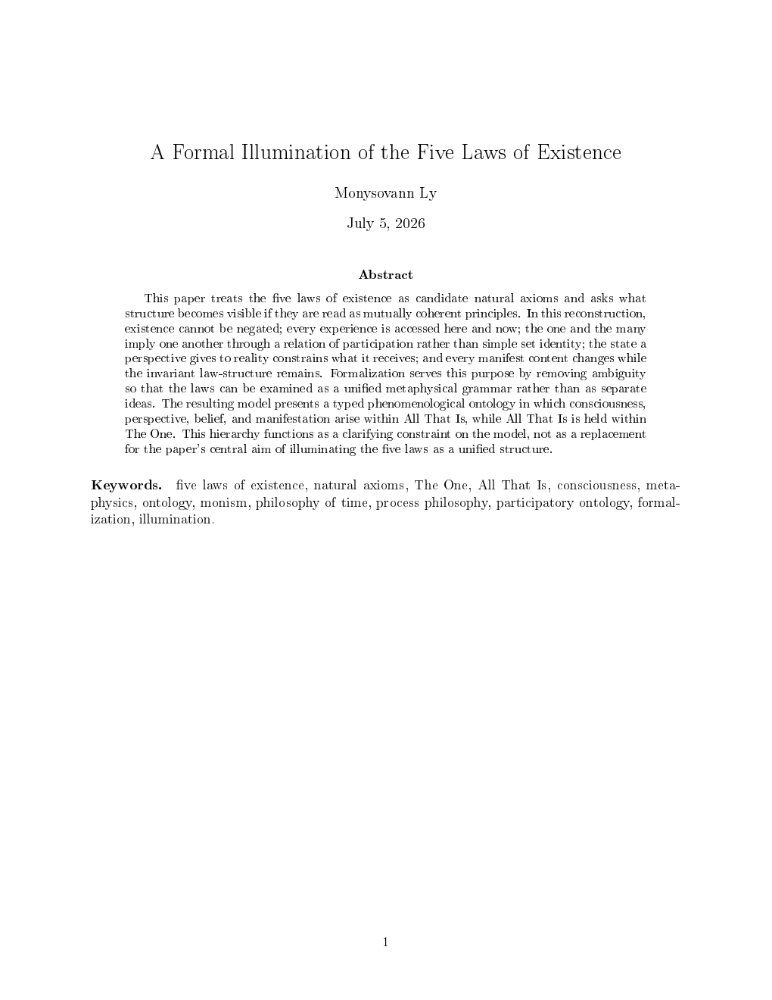
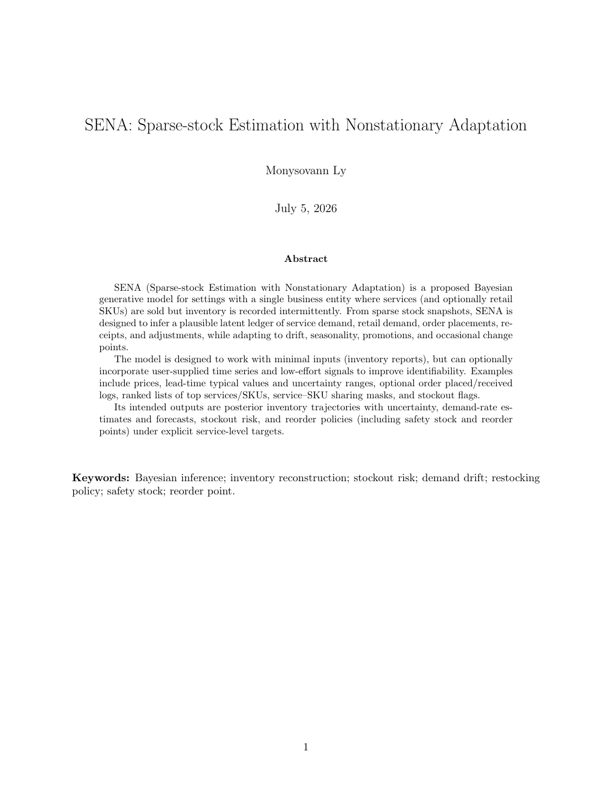
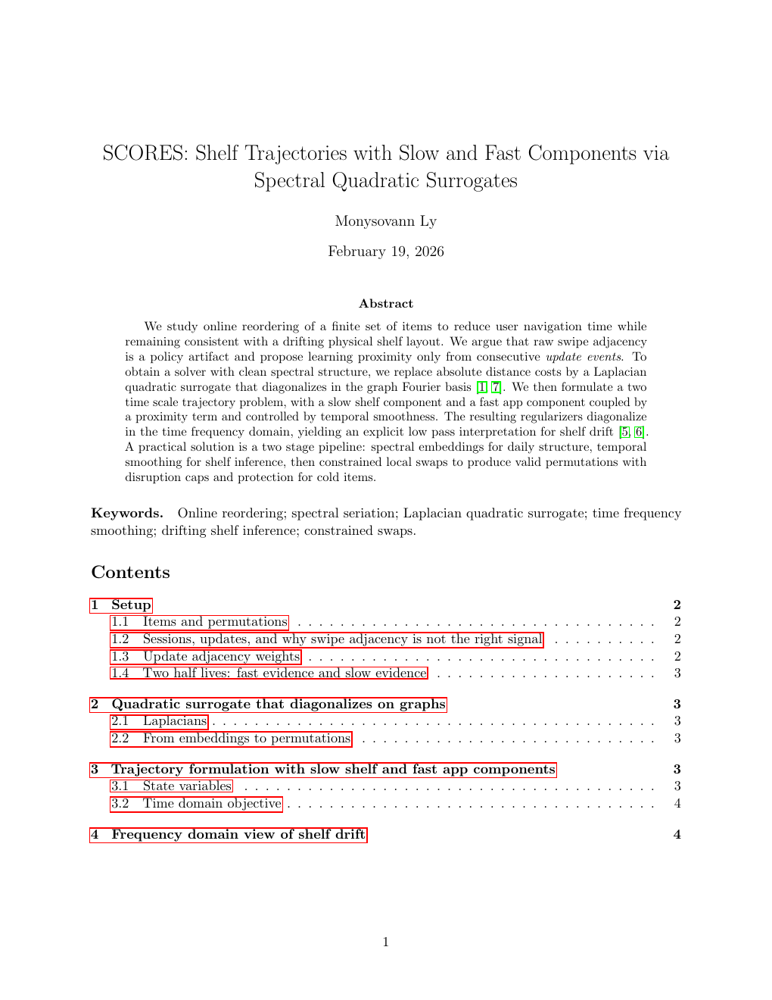
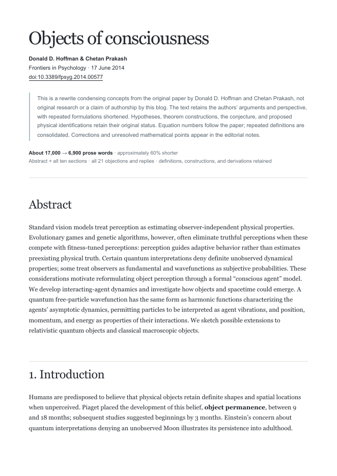
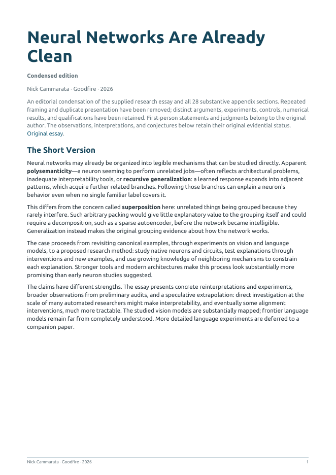

A Formal Illumination of the Five Laws of Existence
A typed phenomenological ontology that reads the five laws as mutually coherent natural axioms.
Details Read PDFBlog-ish formalization write-ups of my various ideas, alongside condensed rewrites of papers and essays by other authors.

A typed phenomenological ontology that reads the five laws as mutually coherent natural axioms.
Details Read PDF
A Bayesian generative model for sparse inventory snapshots, latent demand, drift, and reorder policy.
Details Read PDF
A Bayesian state-space formulation for dynamic ordering from edit-session traces with cold-item uncertainty.
Details Read PDF
A condensed rewrite of Hoffman and Prakash’s paper on perception, conscious agents, and conscious realism.

A condensed rewrite of Nick Cammarata’s essay on neural networks and interpretability.